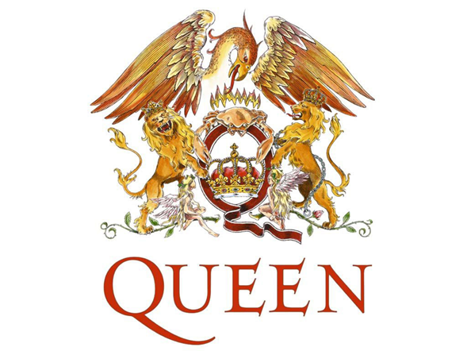

<div class="row">
  <div class="col-sm-6 col-md-12">
    <div class="thumbnail">
      
      <p>Queen es una banda británica de rock formada en 1970 en Londres por el cantante Freddie Mercury, el guitarrista Brian May, el baterista Roger Taylor y el bajista John Deacon. Si bien el grupo ha presentado bajas de dos de sus miembros (Mercury, fallecido en 1991, y Deacon, retirado en 1997), los integrantes restantes, May y Taylor, continúan trabajando bajo el nombre Queen, por lo que la banda aún es considerada activa.</p>

        <iframe width="100%" height="400" src="https://www.youtube.com/embed/_Uu12zY01ts?ecver=1" frameborder="0" allowfullscreen></iframe>
    </div>
  </div>
</div>

